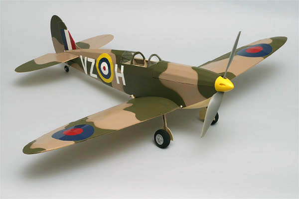
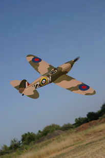
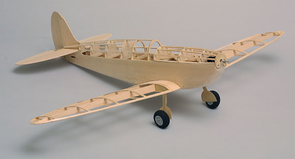

| First let me state that this model is intended as a fun sport model that is recognizable to most as a Spitfire. It does not represent any specific aircraft, and in truth deviates significantly from an accurate scale model. There are no wing fillets for starters. It is supposed to be a daily fun flyer, not a world class competition model that gets flown with knees trembling just 2 or 3 times a year. Having it resemble an admired prototype adds to the enjoyment of flying it regularly. Whether or not I was successful in my goal is for others to decide. |
|
 My Spitfire used a Speed-280 motor, geared 4:1. This power system is seen in many popular ARF type models. A large number of these models have been sold, and I figured that many of these airframes have now been "worn out", with power systems waiting for reassignment. Here is one option. With 4 channels of control, it is a lot of fun in the local school yard. A small brushless motor like an Astro Flight 010 would also be quite suitable. This model was featured as a pull out plan and construction article for the October 2003 inaugural issue of Fly RC magazine. Construction is rather straight forward, except for the wing construction. Instead of plotting and cutting all the different rib sizes, I used full depth spars and capstrips as shown below. This is a quick way to build a wing for smaller models, and it works very well in the air. |
| The Spitfire was covered with Coverite's Tan Coverlite and Balsaloc. The upper surfaces were then painted with a light dusting of Testor's Model Master Enamels, # 1942 Dark Tan followed by #1911 Olive Drab. Masking for the camoflage was light cardboard cut to shape and taped down. No significant attempt was made to secure the masking edges so as to provide a soft edge to the color transitions. Markings are Monokote that has been dulled with steel wool. Omitting the landing gear and rudder servo would save about an ounce, at the expense of ground operations. A few more grams could be saved by eliminating the fuselage hatch. This would mean pulling the wing to change batteries though, a task I detest. |
| Wingspan: | 33 inches |
| Length: | 27 inches |
| Wing Area: | 181 sq. in. |
| Flying Weight: | 8-10 ounces |
| Wing Loading: | 6.36 - 8 oz./sq. ft. |

the completed structure awaits covering
Special thanks to Don Srull for inspiring this model.
Copyright 2003, Thayer Syme. All rights reserved